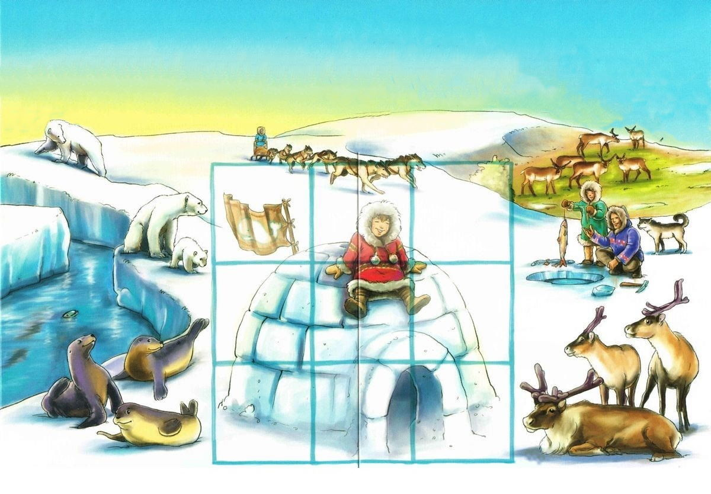
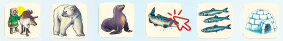

Game Materials
There are 5 types of animal tiles: reindeer (with an eskimo), polar bear, seal, salmon and herring.
 , 14 x
, 14 x
, 14 x
, 14 x
, 14 x
, 14 x
, 14 x
, 14 x 
The herring flees from the salmon, the salmon flees from the seal. The seal flees from the polar bear, the polar bear flees as soon as a reindeer turns up with an Eskimo.

There are 9 different pieces of an igloo:


The game board has an igloo which will be built from the pieces from above:

Players can choose from 5 colors:

Each player starts out with 4 meeples under their empty stack. In the example below the human player chose the blue color while the computer went with the orange:
Game Sequence
The game runs in two phases:
- First Phase: Collecting tiles and building the igloo
- Finishing Phase: Declaring and collecting tiles
First Phase
The game starts with the table covered with all the shuffled tiles facing down:
It is Blue player’s turn now. They turn over a tile - herring. If Blue ends their move now they can collect it.

But Blue rather flips another tile - it is a polar bear. If Blue ends their move now they can collect both of these tiles:

However, Blue decides to turn over another tile. Another herring.There is no threat between the herring and the polar bear, so no-one flees. Therefore it’s still the Blue player’s turn.
Now a salmon turns up!

The herring fears the salmon so they flee!
Player Blue has to turn back the 2 herring tiles,

and the remaining 2 face-up tiles are collected and placed on their stack:
This signals the end of Blue’s turn. Now it’s Orange’s turn. Orange flips a tile - it is a seal:
In their next move, they remember the positions of the 2 herring tiles and, as the herring doesn’t fear the seal, they can be turned up safely:

Orange then decides that 3 tiles are enough and ends their move by collecting the 3 face-up tiles and adding them to their stack:


The rules during First Phase
Turn over any tile you like when it’s your move.
When a reindeer is turned over the sun piece moves one position to the right. This represents the passing of time. If the sun reaches its last position the First Phase ends.

You can keep turning over tiles until:
- You decide you no longer want to turn over more tiles. You can end your move by clicking on the “collect tiles” icon. (You can end your move whenever you like, even if several tiles have already been turned over.)
- OR you turn over an igloo tile
- If you turn over an igloo tile, it is removed from the table and placed on the corresponding igloo square on the board, marked with one of your meeples on top of it. If you don’t have any more meeples left, the igloo tile remains unmarked. You have then helped to build the igloo.
- Note: meeples on igloo tiles are important during the Finishing Phase.
- OR the animals flee
- If animals flee, your move ends and the fleeing animals are turned face down.
- Note: It can happen that several animals flee during one move. For example there is a seal and a herring tile facing up and the player turns up a salmon. The herring flees the salmon and the salmon flees the seal. As a result, herring and salmon are turned face down and the seal is collected.
When your turn has ended, all of the tiles that remain lying face up are collected and put onto your stack in a pile.
It is now the next player’s turn.
The Finishing Phase begins when the sun piece is moved onto the last field on the board.
Finishing Phase
Blue’s last flip turned up a reindeer, this moved the sun into the last position.

Blue collects all face-up tiles from the table and it’s Orange’s turn.
These are the remaining tiles on the table:

Orange has one meeple on the igloo. This gives them the right to flip and collect tiles until they can predict what they’ll turn over.

Orange’s meeple is removed and the tile underneath is put on their stack:

Orange remembers the position of a polar bear from earlier. They declare that their next flip is going
to be a polar bear by clicking on the polar bear icon:

Next, they select the tile that they think contains the polar bear and the tile is flipped over. It really is a polar bear, so the tile is removed to Orange’s stack.

Since they got it right, Orange can continue on guessing. Now Orange wants to turn over a seal.

Unfortunately, Orange turns over a herring tile and their move is over. The tile remains face up on the table.

The move then goes to Blue. Blue has meeples on the igloo,so they remove one along with the tile it was on:

Blue wants to turn over a salmon:

But it is a herring, so the tile remains on the table and the move goes back to Orange.

But Orange does not have any meeples left on the igloo, so the move goes back to Blue ...
The rules during Finishing Phase
After a player has turned over a reindeer and the sun goes into its last position, the move goes to the next player. If this player has a meeple on the board, it can now remove one marked igloo tile to its stack. The meeple used for marking the tile returns to the player.
It’s important to remember which animal hides under which tile on the table. Declare a type of tile you are going to turn over and flip one tile. If you declared correctly, you collect that one tile into your stack. If you were wrong, the tile remains face-up on the table and can not be collected anymore.
If you name the tile correctly, the move remains with you until you miss. Then it is the next player’s move. If the next player does not have a meeple on the board, then the move goes to the next player until neither player can move anymore OR no tile remains.
The sequence of play is not interrupted, even if one player has several meeples on the igloo.
End of the Game
The game ends when there are no more meeples on the board or all tiles have been turned over.
Did you manage to collect the most tiles? If you did, you’ve won the game.
A game by Stefan Dorra (www.dorra-spiele.de) and Manfred Reindl for 2- players aged 5 and over.

© Copyright 2008 Queen Games, D-842 Troisdorf, Germany